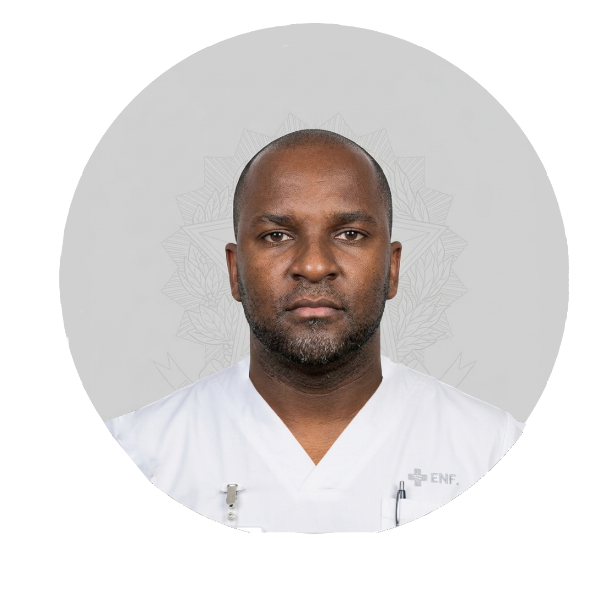
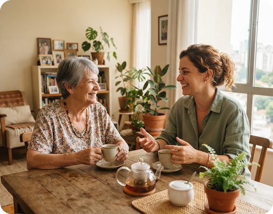

Precisa de ajuda?
Encontre orientações sobre o uso da Amparo.
Encontre apoio para o seu dia a dia.
Encontre orientações sobre o uso da Amparo.
Confira o serviço e a região desejados.

Confira os detalhes antes de continuar.
O canal de atendimento ainda não está disponível.
família · são paulo/sp
Encontre apoio para a rotina de Júlia Fernandes, com clareza em cada etapa.
Cuidadores para companhia e apoio no dia a dia, perto de quem você ama.

Conversas, refeições e passeios
Presença em períodos diurnos
Apoio à rotina da noite
Para Júlia Fernandes · 20/10 · 08h às 16h
Total · 8 horas · R$ 280,006 anos de experiência · Guaianases
★ 4,9 · 32 avaliaçõesCompanhia, apoio à rotina e acompanhamento em passeios.
4 anos de experiência · Saúde
★ 4,8 · 32 avaliaçõesCompanhia, apoio à rotina e acompanhamento em passeios.
família · são paulo/sp
3 cuidadores na região · preços por hora, sem taxa adicional para a família.
família · são paulo/sp
Presença cuidadosa para os pequenos momentos do dia.
Guaianases · São Paulo/SP · 38 anos
★ 4,9 · 32 avaliações · 46 serviços concluídos“Gosto de escutar histórias, preparar um café e criar uma rotina que respeite o tempo de cada pessoa. Atuo com companhia, apoio às refeições e passeios acompanhados.”
Informação autodeclaradaInstituto Vida Ativa · conclusão em 2020
Documento conferido em 16/10/2026Apoio à mobilidade leve, organização da rotina e companhia.
Experiência e habilidades autodeclaradas★ 5,0 · Gabriel Sena · 12/10/2026
“Beto foi pontual e muito atencioso. Minha vó gostou da conversa e do atendimento.”
★ 5,0 · Ricardo Lima · 09/10/2026
“Combinamos as necessidades com antecedência e recebemos um retorno claro ao fim do dia.”
família · são paulo/sp
Conte um pouco sobre Helena para alinhar expectativas com Beto.
família · são paulo/sp
Estamos aguardando a resposta de Beto. Você pode acompanhar por aqui.
✓ Solicitação recebida · 19/10 às 09h41
Dados e preferências enviados para análise da profissional.
◷ Aguardando resposta · até 19/10 às 20h
O prazo termina 12 horas antes do serviço. Se não houver aceite, a solicitação expira e a pré-autorização é liberada.
○ Após aceite · confirmação e pagamento
Você será avisada. O endereço completo será liberado à profissional.
Visa •••• 4242 · R$ 280,00 pré-autorizados
Não cobrado definitivamenteEm caso de recusa, expiração ou cancelamento antes do aceite, a reserva é liberada sem custo.
família · são paulo/sp
Acompanhe solicitações, serviços e o que ficou combinado.
Solicitação · AMP-2026-1020
Quando · 20/10/2026 · 08h às 16h
Duração e valor · 8 horas · R$ 280,00
Endereço · Guaianases, São Paulo/SP
Pagamento · Visa •••• 4242 · pré-autorizado
Companhia, almoço e hidratação. Passeio leve no condomínio. Helena caminha com bengala; Gabriel recebe a profissional às 08h.
Não há procedimentos médicos ou de enfermagem neste serviço.
família · outubro 2026
Pagamentos e reservas separados, para você acompanhar com clareza.
2 atendimentos concluídos e capturados
Pré-autorização · não é pagamento
Cartão usado nas três operações
| Encontro | Profissional | Estado | Valor | Recibo |
|---|---|---|---|---|
| 12/10 · 4h | Beto | Concluído · capturado | R$ 140,00 | REC-1012 · Baixar |
| 18/10 · 4h | Beto | Concluído · capturado | R$ 140,00 | REC-1018 · Baixar |
| 20/10 · 8h | Beto | Aguardando aceite | R$ 280,00 reservados | Ainda não emitido |
Reserva excluída do total pago. AMP-2026-1020 enviada em 19/10 às 09h41.
Antes do aceite: recusa, expiração ou cancelamento liberam a reserva sem custo. Após o aceite, até 12h antes: reembolso integral de R$ 280. Menos de 12h: retenção de 20% (R$ 56) e reembolso de R$ 224.
Após o aceite, a cobrança é capturada. A liberação à profissional ocorre após conclusão do encontro.
família · outubro 2026
Sua experiência ajuda outras famílias a conhecer a profissional.
Beto · companhia e rotina para Helena
18/10/2026 · 08h–12h · 4 horas · R$ 140,00 · concluído
5 estrelas selecionadas · excelente